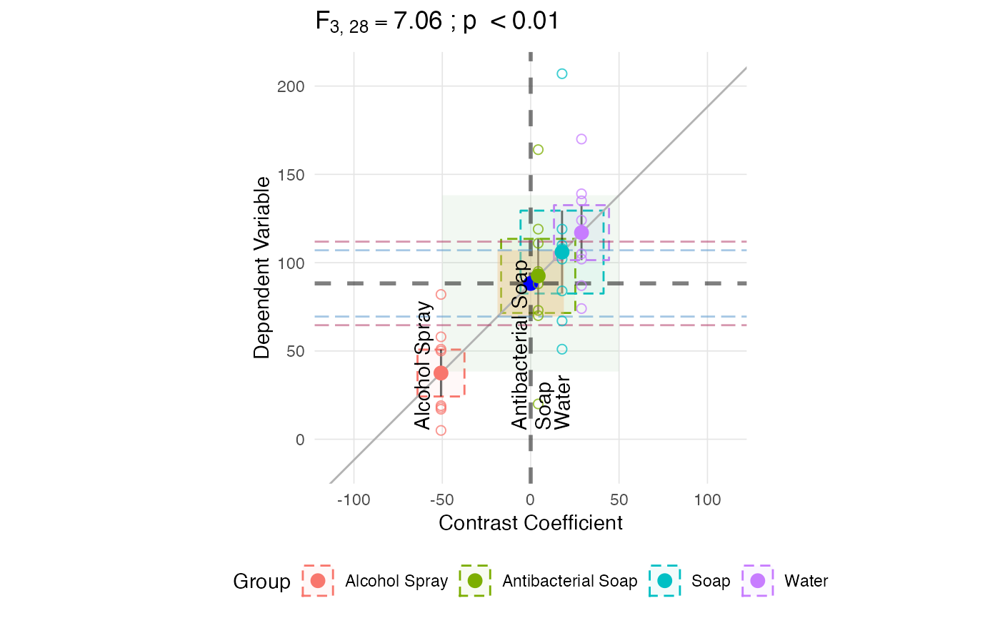

This is a ggplot2 adaptation of Pruzek and Helmreich's granova::granova.1w
function. This also provides parameters to customize which features are
included on the plot.
Usage
anova_vis(
Y,
group,
plot_datapoints = TRUE,
plot_group_means = TRUE,
plot_boxplot = FALSE,
plot_group_variances = TRUE,
plot_group_sd = TRUE,
plot_ms_within = TRUE,
plot_ms_between = TRUE,
plot_between_group_variances = FALSE,
plot_unit_line = TRUE,
plot_grand_mean = TRUE,
plot_sd_line = FALSE,
plot_pooled_sd = FALSE,
xlab = "Deviation Contrast",
ylab = "Dependent Variable",
grand_mean_col = "blue",
sd_line_col = "maroon",
pooled_sd_col = "steelblue3",
ms_within_col = "#fdc086",
ms_between_col = "#7fc97f",
box_width = 0.04,
box_color = "grey50",
plot_group_labels = FALSE,
...
)Arguments
- Y
the dependent variable.
- group
the independent, or grouping, variable.
- box_width
the width of the box express as a percentage of the width of the x-axis.
References
Pruzek & Helmreich (2010). Elemental Graphics for Analysis of Variance using the R Package granova
Examples
data(hand_washing)
anova_vis(hand_washing$Bacterial_Counts, hand_washing$Method)
